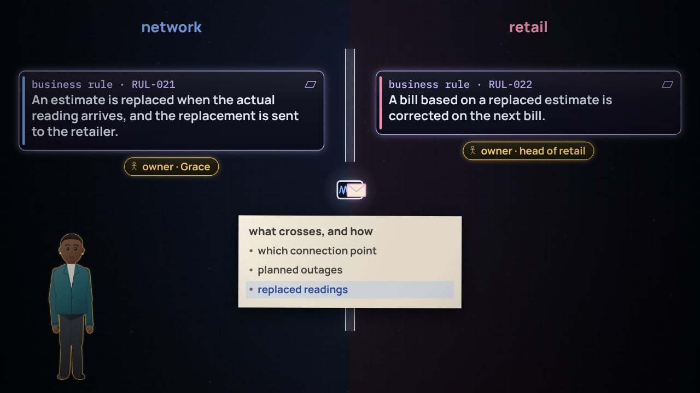

Film 1 of 11 · Why enterprise architecture
Day one
An org chart, 140 systems and a backlog: all true, none of it the place. Learn how it works before you ask the questions.
Topics › Enterprise architecture › The map before the data
A series on enterprise architecture, and why it matters for data. Tomás, a new enterprise architect at a publicly owned energy utility, learns how the place works before he asks what its data should answer: who it serves, why it must change, what it must be able to do, how value reaches people, who does the work, and what runs it.
Watch them in order: each film adds a layer to the map. Nine of eleven films are out.
Film 1 of 11 · Why enterprise architecture
An org chart, 140 systems and a backlog: all true, none of it the place. Learn how it works before you ask the questions.
Film 2 of 11 · Customers and offerings
Edison's customers wanted light, not electricity. Who pays, who uses and who decides, and a canvas for each.
Film 3 of 11 · Motivation
Three letters pull the utility three ways. Who cares, what pushes, what must become true, and a principle to settle it.
Film 4 of 11 · Capabilities
The runners changed; the ability to move a message stayed. A capability outlasts whoever does it, however and with whatever.

Film 5 of 11 · Value streams and processes
Lunch crosses Mumbai, changing hands. Power comes back to forty homes. Value from the customer's side, and detail only where order matters.

Film 6 of 11 · Actors, roles and domains
Japan runs on two frequencies. A utility has two kinds of customer. Roles, actors, and a translation at the edge.

Film 7 of 11 · Applications, technology and the path to a target
An imagined street in 2045. Today's 140 systems on the map. A target, and the path to it, with reasons.

Film 8 of 11 · Decisions, questions and measures
Kerala's fishermen, 1997. Forty-two requests, the skipper's test. Goals traced down to the measures that check them.

Film 9 of 11 · Objects, owners and rules
Tartu's once only. A bill never corrected, and a script on the wall. Each rule written once, with an owner and a reason: tests for the data, a tracking table for the business.
Twelve hands-on labs, one for each film and one on ArchiMate 4, then 26 situations from every film. Your progress stays in this browser.
Take it apart: 12 hands-on labs →Make the call: 26 situations
Two more films, on what the map does for data.
Day one is a badge, an org chart, a list of 140 systems and an invitation to a meeting about “the transition program”. Film by film, Tomás builds a map of the utility, from why it exists down to what runs it. Only then can he say which questions it needs to answer, where each data rule belongs, and what a change in strategy means for the data.
| Film | Opens with | Still true today |
|---|---|---|
| Day one | The Domesday survey, England, 1086 | Before you can govern a place, you have to know what it is. |
| Who it serves, and how it pays | Edison's customers on Pearl Street, 1882 | People buy what an offering does for them: light, not electricity. |
| Why it moves | The north-east blackout, 1965 | When no one sees the whole, shared rules hold it together. |
| What it must be able to do | The Inca's relay runners, the Andes, 1400s | Runners and roads change; the ability to move a message stays. |
| How value reaches people | Mumbai's dabbawalas, since 1890 | Value reaches people through hand-offs, and the detail lives there. |
| Who does it, and where meaning changes | Japan's two frequencies, 1890s and 2011 | The same word can mean something different on each side of a line; what crosses must be translated. |
| Today, and where it's going | An imagined morning in the utility's region, 2045 | Where it's going is drawn as carefully as where it is, and the path between is its own drawing. |
| Now the questions appear | Kerala's fishermen, 1997 | A question matters when someone will act on its answer, in time. |
| Rules with a home | A birth in Tartu, Estonia, today | Each fact has one home and one owner, so it's asked for once. |
Cyan outlines are technical; gold outlines are business.
Tomás, the new enterprise architect, the series' guide
Grace, who owns network operations
Farah, the customer advocate
Ama, the regulatory lead